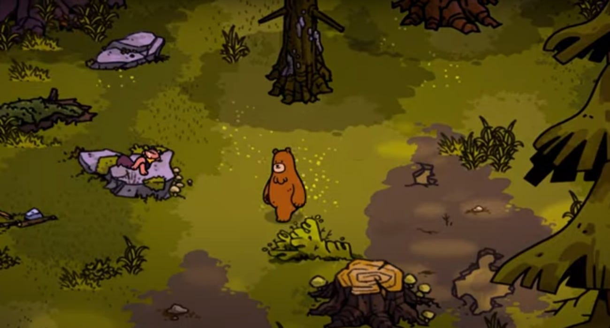

Reading Novels
When I want to escape the pressures of everyday life, I love to visit new worlds through literature. I favor fantasy and science fiction above most other genres, however, I also love a good memoir now and again. Some of my all-time favorite books are Born With Teeth by Kate Mulgrew, Babel by R.F.Kuang, and The Way of Kings series by Brandon Sanderson.
Playing Viodeo Games
If I'm not escaping into another world via written word, I'm questing through realms through video games. I find that games offer an experience that requires critical thinking but that is also relaxing. From the Fallout series to Disney Dreamlight Valley, and everything in between, video games help me connect to others in new ways!

Spending Time with My Family
My family is very impotant to me. Spending quality time with my husband, dog, and chosen family is a priority everyday. Whether we are playing a game together, watching tv, or doing separate hobbies in the same room, everyone is included and seek to support eachother. My fmaily helps to rejuvinate me and fill up my "spoons" when I've had a particulary hard week.